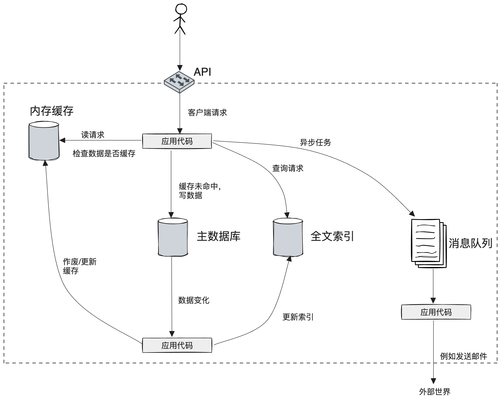

第1章 可靠、可扩展与可维护的应用系统
当前的许多系统都是数据密集型应用（data-intensive），已经不再受限于CPU，关键在于数据量、数据的复杂度以及数据的快速多变为特性。比如大型电商如淘宝、京东，新闻推送如腾讯、凤凰网，社交平台如twitter、facebook等等，都属于这一类型。

基本构成组件：
- 数据库
- 高速缓存
- 索引：根据关键字快速检索
- 流式处理：比如一些flink任务，或者自定义的worker承接来自MQ的消息，进行相关的数据处理
- 批处理：定时任务
数据系统的三个方面：
- 可靠性
- 可扩展性
- 可维护性
可靠性
可靠性大家天天挂到嘴边，用大白话说其实就是有点小风小浪，甚至中风中浪，系统是否稳定，书面一点，就是系统在遇到局部故障时，仍能维持服务的能力。
比如一些典型的场景：
- 参数输入错误
- 流量突然增加了一倍
- 分布式部署的某个机房突然挂掉了
- 黑客入侵
遇到这些情况，系统能不能很好的应对。
故障（fault）和失效（failure）
前者强调组件偏离规格，强调单体和局部，后者强调整体和全局，也就是说整个服务已经没法提供服务了。但事实上，大家在日常工作中区分不了那么精细，而且说法也不尽相同，书中提出这一概念，是为了说明100%可靠的系统是不存在的，系统的容错是有限度的，并不是所有的故障系统都能够容忍。
故障应对措施：
- 硬件故障：冗余备份，比如RAID、UPS电源。
- 软件错误：难以预料，更加隐蔽，只能充分的测试，报警和可观测系统。
可靠性很重要，但并不是绝对的。比如银行和普通的web服务对可靠性要求肯定不一样，甚至同一个系统的不同模块对可靠性要求也不尽相同，通常在线的可靠性要求要高于离线系统。
可扩展性
系统规模的增长，比如流量、数据量，相应的系统资源如何增加。
在日常工作中很常见，比如阿里、京东这样的电商公司在大促的时候面对流量激增通常的方案就是扩容，那到底扩多少呢？在降本增效的背景下，老板经常会问“能不能优化下，不用增加机器”，因为机器都是实实在在的钱呢。这个说起来容易，其实挺难的，因为系统资源增长并不一定是线性的，但实际工作中都是按照线性来评估，或者使用压测来决定。
负载通常使用吞吐量进行描述，在线系统常用QPS来衡量，离线系统可能是单位时间处理的数据量来衡量。
性能的话，使用性能指标的分位值来衡量，比如avg、p50、p99。书中说“avg掩盖了一些信息，无法告诉有多少用户实际经历了多少延迟”，实际上大部分情况下，avg和p50是非常接近的，avg的缺点是容易受异常值影响。比如100个请求，99个请求的延时都是50ms左右，剩下一个请求5000ms，那么平均下来，延时接近100ms。
通常衡量性能时，会同时使用avg和p99，一个说明平均情况，一个说明长尾情况。
长尾效应
一个服务涉及多个不同的后端调用，则最慢的调用会拖累整个服务相应时间。
比如分布式部署的服务，可能会涉及多个机器的相应，这些机器有快又慢。又比如推荐系统中不同用户的画像有多有少，多的自然相应就慢一些。这些都有可能造成长尾效应。
关于分位值的两种解释，以p99为例：
- 将延时按照从小到大排列，第99%*n（n为请求数）的延时大小。
- 100个请求中，有99个请求的延迟是小于p99的，也就是一个请求小于p99的概率是99%。
延迟（latency）和响应时间（response time）
延迟是系统服务的时间。响应时间是客户端看到的时间，除了服务时间，还有网络来回的延迟。平常上下游服务指标对不上，可能就是没有区分延迟和响应时间，但通常内网里延迟也就毫秒级。
扩容方式：
- 垂直扩容：使用更好的机器
- 水平扩容：使用更多的机器
一般小公司或初创公司倾向于使用垂直扩容，而中大型公司倾向于使用水平扩容，或者二者兼而有之，具体还是得看成本、业务增长速度等因素。
可维护性
一说维护，首先想到的可能就是运维，其实这里的维护性是指系统容不容易改，新功能容不容易上，出了问题容不容易排查和解决，不光涉及运维。
涉及到三个原则：
- 可运维性
- 简单性
- 可演化性
可运维性
运营团队能够方便的保持系统平稳运行。
简单性
简而言之，就是控制复杂度。
对于自己的小项目，你可以把代码写的简洁而优美，对于多人参与的公司级项目，复杂度常常会超出控制，相信大家都见识过这种“屎山”代码。
作者列举了几种表现形式，说的太好了，我必须全文摘录下来：
- 状态空间的膨胀：这种情况很好理解，随着代码越来越多，所要处理的情况越来越多，状态空间肯定越来越多。
- 模块紧耦合：比如随着人员的流动，最初的设计原则已经无人知晓，导致原本不该依赖的模块依赖了。
- 令人纠结的相互依赖关系
- 不一致的命名和术语：比如有的使用英文命名，有的使用拼音，即便有时候都使用英文大家翻译的也是五花八门。
- 为了性能而采取的特殊处理：这一条和下一条差不多，都是一些特例处理，如果你不是当事人，不了解背景，就很难了解代码的逻辑。
- 为了解决特定问题而引入的特殊框架：比如为什么有了grpc还要引入brpc，为什么有了protobuffer还要引入thrift，类似的框架同时出现在系统中
作者给出了解决复杂度的方法是抽象。但真正想做好并不那么容易，会受人员经验、需求紧迫度、公司政策等因素影响。
一个真实的例子
公司一名同学修改别人的代码导致线上出现错误，并因此复盘，后来，再遇到这种情况，这名同学都是复制一份代码再改，这样至少不会影响线上现有功能，但是代码的冗余度增加了。
可演化性
是不是容易改变，比如容易修改原来的老功能，容易添加新功能。
这一点和简单性密切相关，因为简单的系统更容易修改。